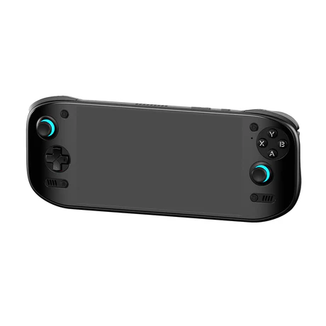

Odin2 Portal
L'AYN Odin 2 Portal és una consola portàtil d'alt rendiment equipada amb un processador Snapdragon 8 Gen 2 i GPU Adreno 740, ideal tant per a jocs Android com per a emulació avançada. Disposa d'una pantalla OLED de 7 polzades amb resolució 1080p, taxa de refresc de 120 Hz, 800 nits de brillantor i una cobertura del 155% de l'espai sRGB, oferint una experiència visual excel·lent. Està disponible en configuracions amb 8, 12 o 16 GB de RAM LPDDR5X i opcions d’emmagatzematge de 128 GB o 512 GB, ampliables. El seu disseny ergonòmic i el seu rendiment fan que sigui una de les millors opcions del mercat per a jugadors exigents.
COMPRAR